Player, cesta, manzana roja y amarilla, bomba, linea de tierra, estrella, vidas, titulo del juego y boton para empezar a jugar. Hay un escenario final pero lo pondremos como un objeto..
Escenario Intro y el escenario de Juego.
Comenzaremos poniendo el escenario Intro y colocamos la estrella en el centro. La pondremos muy pequeña e iremos cambiando su tamaño hasta llegar al 100% y luego la volveremos a poner pequeña. Haremos una llamada con "enviar".

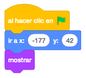
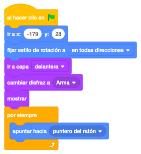
Le pondremos el Escenario Juego y pondremos una música cuando la estrella disminuya su tamaño.
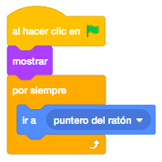
Cuando empieze el juego detendremos el sonido.
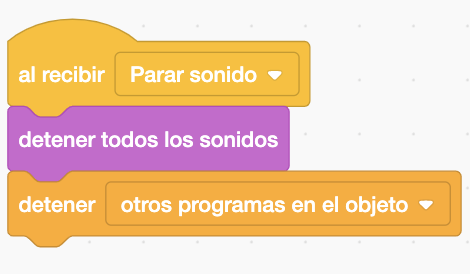
Haremos que aperezca el título del juego. Aumentara y disminuira el tamaño cuando el puntero del ratón lo toque y girará continuamente de derecha a izquierda un poco.
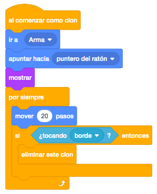
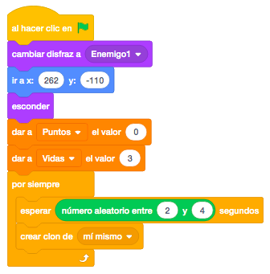
Pondremos un botón. Tendrá un tamaño pero si lo toca el puntero del ratón aumentara y hara un efecto gráfico de brillo cuando el ratón es presionado y empezara el juego.
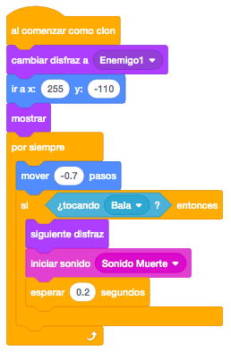
El Jugador se moverá con las flechas izquierda y derecha moviendonos en el eje X..
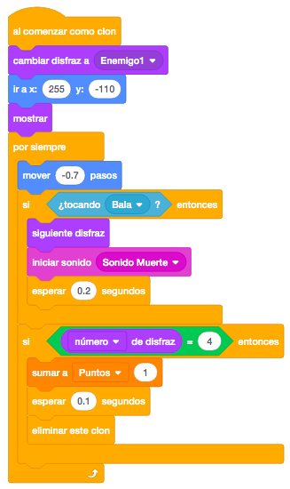
También haremos que el Jugador cambie de disfraz.
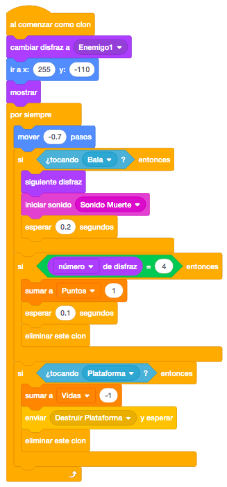
Inicializaremos las variables que necesitaremos a lo largo del juego.
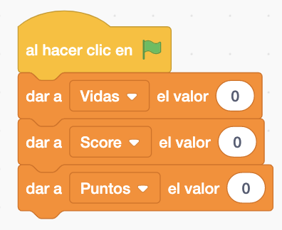
La manzanas serán clones. Se posicionara arriba y en posición aleatoria de "X" y bajara pero usando el bloque de "sumar Y". Y cuando toque la linea de tierra sonara el Sonido fallo y quitará 1 vida y se eliminara el clon.
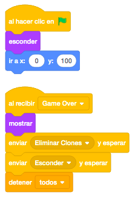
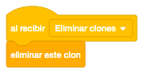
Y cuando toque la cesta sumará 1 punto. Para ello creamos dos variables. Hará un sonido y eliminaremos el clon.
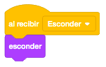
Cuando el juego se acabe se recibira un mensaje para que se escondan o muestren variables, se detengan los programas y se eliminen el clon.
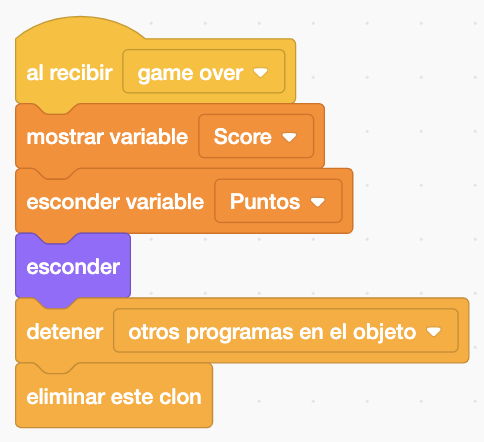
En cada objeto que tengan clones habrá que llamara a "eliminar clones" para que desaparezcan.
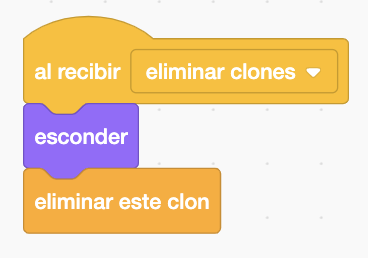
La manzana amarilla será igual que la manzana roja pero sumará mas puntos y aparecerán más tarde.
La línea de tierra la posicionamos y la mostraremos cuando empieze y mandaremos un enviar para esconderla.

La bomba tendrá dos disfraces la propia bomba y la explosión. También serán clones y aparecerán con un número aleatorio. Y si toca la línea de tierra sonará un sonido y se eliminará el clon.


Y si toca la cesta habrá un sonido y se terminará el juego.

Y cuando la variable vida se igual a 3 ó mayor que 3 haremos el game over.
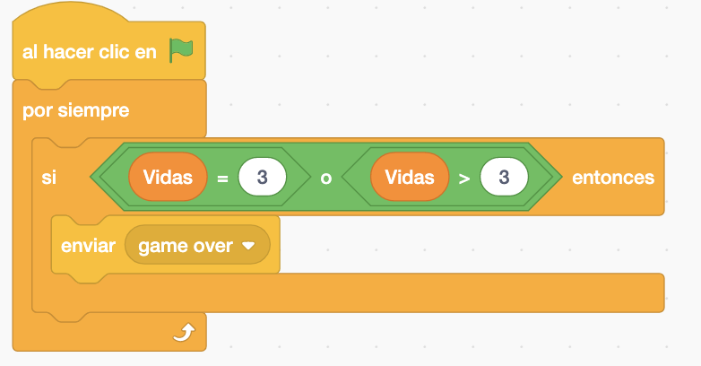
Cuando llamemos al game over aparecera una escenario que esta como un objeto. Mostraremos las variables Score y HighScore y haremos el cálculo para la carga de HighScore. Y detenemos el juego.
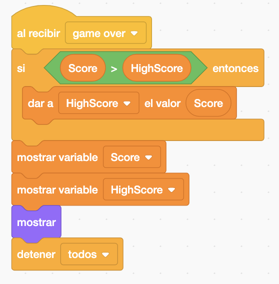
Y el juego quedaría así.

Para descargarte el juego terminado pulsa aquí.